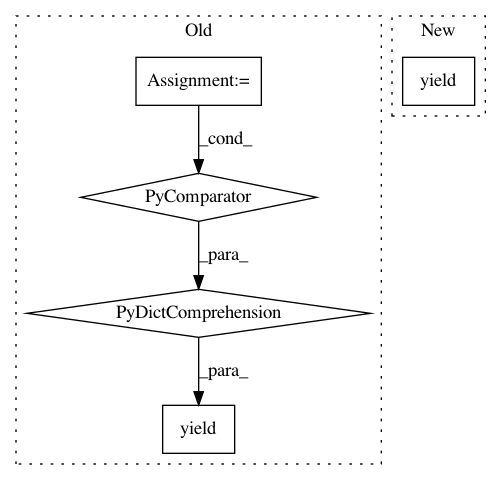

5d584c27f062e9557aa920af6758b995f4094ed9,python/caffe/pycaffe.py,,_Net_batch,#Any#Any#,307
Before Change
// Yield last padded batch, if any.
if remainder > 0:
yield {name: blobs[name][-remainder:] +
[np.zeros_like(blobs[name][0])] * remainder
for name in blobs}
// Attach methods to Net.
Net.blobs = _Net_blobs
After Change
padding = np.zeros((remainder,) + blobs[name].shape[1:])
padded_batch[name] = np.concatenate([blobs[name][-remainder:],
padding])
yield padded_batch
// Attach methods to Net.
Net.blobs = _Net_blobs
In pattern: SUPERPATTERN
Frequency: 3
Non-data size: 5
Instances
Project Name: BVLC/caffe
Commit Name: 5d584c27f062e9557aa920af6758b995f4094ed9
Time: 2014-05-16
Author: shelhamer@imaginarynumber.net
File Name: python/caffe/pycaffe.py
Class Name:
Method Name: _Net_batch
Project Name: facebookresearch/pytext
Commit Name: ea51cc011a7802bc35f52c64745230a4155cb352
Time: 2019-05-06
Author: chenyangyu@instagram.com
File Name: pytext/data/data.py
Class Name:
Method Name: pad_and_tensorize_batches
Project Name: pgmpy/pgmpy
Commit Name: c7937882fce356c540e526f3eb690b304f83c9d7
Time: 2015-08-15
Author: pratyaksh@me.com
File Name: pgmpy/models/MarkovChain.py
Class Name: MarkovChain
Method Name: generate_sample